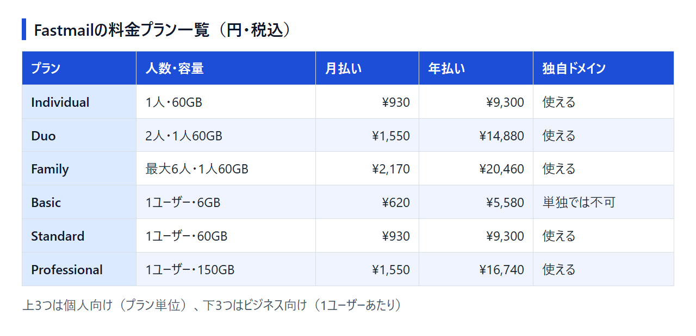

Fastmailの料金は日本円でいくら？無料期間と独自ドメインが使えるプランも解説
Gmailの無料アカウントから、自分のドメイン名のメールアドレスに切り替えようとすると、よく候補に挙がるのがFastmailです。ただ、ネットで見つかる紹介記事はドル建てで、プラン名や金額が今の料金ページと合わないものも少なくありません。
ここでは、日本からアクセスしたときに表示される円（税込）の料金をもとに、6つのプランの違い、無料で使える期間、独自ドメインが使えるプラン、支払いと解約の注意点を整理しました。どのプランで契約するか、Proton Mailなどほかの有料メールにするかを決める材料にしてください。
結論：Fastmailはいくらで、どのプランを選べばいいか
Fastmailに常設の無料プランはなく、無料で使えるのは最長30日のトライアルだけです。その後も使い続けるには有料プランの契約が必要で、日本からは円（税込）で支払えます。独自ドメインのメールは、個人向けならどのプランでも使えます。ビジネス向けの最安プランBasicを単独で契約した場合は独自ドメインを使えず、Standard以上のユーザーと同じアカウントで組み合わせたときだけ使えます。
使い方ごとの選び方と金額は次のとおりです。
- 1人で独自ドメインのメールを持ちたい：Individual（月払い¥930／年払い¥9,300）
- 夫婦やパートナーと2人で使う：Duo（年払い¥14,880）
- 家族で使う：Family（最大6人・年払い¥20,460）
- 仕事で複数人のアドレスを管理する：Standard（1ユーザー年払い¥9,300）。Basic（年払い¥5,580）を混ぜれば安くでき、容量が必要ならProfessional
プランごとの容量と月払いの金額は、次の一覧にまとめました。
日本からアクセスすると、料金ページの金額は円（税込）で表示されます。
Fastmailの料金プラン一覧（日本円・月払いと年払い）
料金プランは個人向け3つとビジネス向け3つの2系統で、どれも年払いにすると月払いより割安です。

米国向けのページでは、Individualが月$6、年払いなら月$5（年$60）です。1ドル=157円換算（執筆時点の目安。為替で変動）で年$60は約9,420円となり、円の年額¥9,300とほぼ同じ水準です。
個人向け：Individual・Duo・Family
個人向けの3プランは、どれも独自ドメインのメールに使えます。料金はプラン単位で、人数分を払う形ではありません。
- Individual（1人・60GB）：月払い¥930／年払い¥9,300
- Duo（2人・合計120GB＝1人60GB）：月払い¥1,550／年払い¥14,880
- Family（最大6人・合計最大360GB＝1人60GB）：月払い¥2,170／年払い¥20,460
2人で使う場合、Individualを2つ契約すると年払いで¥18,600です。Duoにすれば、1人あたりの容量は同じ60GBのまま年¥3,720安くなります。
ビジネス向け：Basic・Standard・Professional（1ユーザーあたり）
ビジネス向けは1ユーザーごとの料金で、使う人数分を支払います。
- Basic（6GB・単独では独自ドメイン不可・外部メールアプリ不可）：月払い¥620／年払い¥5,580
- Standard（60GB）：月払い¥930／年払い¥9,300
- Professional（150GB）：月払い¥1,550／年払い¥16,740
StandardはIndividualと同じ金額・同じ容量です。違いは、ビジネス向けなら同じアカウントの中でプランを混在させられ、Basicのユーザーを安く加えられる点にあります。1人だけで使うならIndividual、社員やスタッフのアドレスを加えていくならStandard、という分け方になります。
月払い・年払い・複数年契約の違い
年払いの割引額は、月払いを12か月続けた場合と比べると分かります。
- Individual・Standard：月払い12か月で¥11,160、年払いは¥9,300（年¥1,860の差）
- Duo・Professional：月払い12か月で¥18,600、年払いはDuoが¥14,880、Professionalが¥16,740
- Family：月払い12か月で¥26,040、年払いは¥20,460（年¥5,580の差）
1年以上使うつもりなら、年払いを選ぶのが基本です。料金ページには24か月・36か月の契約もあり、年払いよりさらに割安に設定されています。
表示される金額は、アクセスする国や時期によって変わることがあります。契約前に、プランと支払い期間を切り替えて最終的な金額を見ておきましょう。
無料で使える？30日間の無料トライアルでできること
無料で使えるのは最長30日のトライアル期間だけで、カードを登録しなくても始められます。Gmailのように無料のまま使い続けられるプランは用意されていません。
トライアル中に使えない機能と上限
トライアル中は、有料プランと比べて次の制限があります。
- 作れるアドレスは5件まで。作ったアドレスは後から削除も変更もできない
- 送信は1日120通まで
- Webサイト作成、転送ルール、Sieve（メールの振り分けスクリプト）、ファイル共有は使えない
- プランの変更はできない
- スパム対策で携帯電話番号のSMS認証を求められることがあり、認証するまではIMAP/POPでの受信などが制限される
メールアプリで受信を試すつもりなら、先にSMS認証を済ませておいてください。アドレスは作り直せないので、5件の枠は本番で使う名前に絞って作りましょう。
今のメールから転送を設定して試すつもりでも、Fastmail側の転送ルールはトライアル中に使えません。受信の振り分けや転送を移行の条件にしているなら、まず月払い（Individualなら¥930）で有料化して確かめるのが確実です。
トライアルが終わるとどうなるか
支払いをしないまま期間が終わると、アカウントは段階的に止まります。
- トライアル終了までに支払わないと、メールの送受信が止まる
- その後、アカウントは無効化され、削除される
- 途中で支払うと、その時点でトライアルは終わり、そこから契約期間が始まる
無料のまま置いておける状態はないので、トライアルの30日で続けるかどうかを決めることになります。支払った時点で残りの無料日数はなくなるため、急がないなら期間いっぱい試してから契約するほうが得です。
独自ドメインを使うならどのプランか（人数別の年額の目安）
独自ドメインは、個人向けの3プランとビジネス向けのStandard・Professionalで使えます。Basicは単独では使えませんが、チームならStandard以上のユーザーと組み合わせて使えます。1人ならIndividual、仕事用に人数分のアドレスを分けるならStandardが出発点です。
独自ドメインが使えるプラン・使えないプラン
- 使える：Individual、Duo、Family、Standard、Professional
- 単独では使えない：Basic
Basicは1ユーザー年¥5,580と最も安いため、料金だけで選ぶと候補に残ります。ただし、Basicを1人で契約しても自分のドメイン名のアドレスは作れないので、1人で使うならBasicは選択肢から外れます。
複数人のビジネスアカウントでは事情が変わります。StandardかProfessionalの管理者が1人いれば、同じアカウントのBasicのユーザーも、共有された独自ドメインでアドレスを作れます。
1人・2人・家族・3人のチームで年額はいくらか
1人・2人・家族なら、Individual・Duo・Familyの年払いの金額がそのまま答えです。1人あたりに直すと、Individualは年¥9,300、Duoは2人で割って年¥7,440、Familyは6人で使えば年¥3,410まで下がります。
3人のチームはビジネス向けで考えます。プランを混在できるので、組み合わせ方で年額が変わります。
- 全員Standard：年¥27,900（¥9,300×3）
- Standard 1人＋Basic 2人：年¥20,460（¥9,300＋¥5,580×2）
Basicにした2人は、容量が6GBになり、OutlookやiPhoneのメールといった外部メールアプリも使えません。外部メールアプリを使わず、容量も少なくて済むメンバーをBasicにすれば、全員Standardより年¥7,440安くなります。
日本からの支払い方法・請求書・消費税
2024年4月から決済代行のPaddleが販売者になり、日本からは円建てで、主要なカードやPayPalで支払えます。JCBは公式の支払い方法一覧に載っていません。
- 使える支払い方法：Visa、Mastercard、American Express、Discover、Diners Club、Apple Pay、Google Pay、UnionPay、Maestro、Mada、PayPal
- JCB：公式の一覧に記載がない。手持ちがJCBだけなら、Apple PayやPayPalを含めて使える手段を先に確かめておく
- 使えない支払い方法：現金、小切手、銀行振込、暗号資産
- カード明細の表記：「Paddle.net* Fastmail」
- 請求書：支払い後にPaddleからメールで届き、再発行はPaddleのサイトで依頼する
- 請求書払い（後払い）：案内はない
明細にFastmailではなくPaddleの名前が出るので、経理担当者に渡す場合はひと言添えておくと確認の手間が省けます。税は請求先住所に応じて徴収されますが、公式ヘルプには日本の適格請求書（インボイス）への対応について記載がありません。経費として処理する際の消費税の扱いは、税理士に確認してください。
Proton Mailとの料金の違い
年額だけで比べると、1人ならProton Mail Plus、2人・家族ならFastmailのほうが安くなります。無料プランから始めたい人や、メール本文の暗号化を重視する人はProton Mail、OutlookやiPhoneのメールなど普段のアプリでそのまま使いたい人はFastmailが合います。どちらも日本向けに円の料金を表示しているので、同じ基準で比べられます。
1人で使う場合：Individual と Proton Free・Mail Plus
- Proton Free：¥0。独自ドメインは使えず、送信は1日150通まで
- Proton Mail Plus：年額¥5,988（12か月契約で月¥499）。独自ドメイン1個、アドレス10件
- Fastmail Individual：年払い¥9,300。独自ドメインを使える
1人で独自ドメインを1つ使うだけなら、年額はMail PlusのほうがFastmail Individualより¥3,312安くなります。
それでもFastmailを選ぶ理由になるのは、メールアプリとの相性です。Fastmailは個人向けのどのプランでも、OutlookやiPhoneのメールといった外部のメールアプリで使えます。Proton Mailで同じことをするには、有料プラン限定のBridgeをパソコンに入れる必要があり、スマートフォンのメールアプリには対応していません。
反対に、Proton同士のメールがエンドツーエンドで暗号化され、受信箱の本文もProton側が読めない形で保存される点を重視するなら、Protonが向いています。独自ドメインが不要で、無料のアドレスで足りる人にとっては、Proton Freeという選択肢もあります。
2人・家族で使う場合：Duo・Family どうしの比較
- Proton Duo（2人・2TB）：年額¥22,488
- Proton Family（6人・3TB）：年額¥35,988
- Fastmail Duo（2人・120GB）：年払い¥14,880
- Fastmail Family（最大6人・最大360GB）：年払い¥20,460
年額はFastmailのほうが、Duoで¥7,608、Familyで¥15,528安くなります。容量はProtonが2TB・3TBとけた違いに大きく、写真やファイルの保存も含めて1つのサービスにまとめたいかどうかが、選ぶときの分かれ目です。
返金の扱いも異なります。Protonは料金ページに30日間の返金保証を掲げ、解約後も容量などを無料プランの範囲に収めれば無料プランに戻れます。Fastmailは未使用期間の返金がなく、解約するとアカウントが閉鎖されます（次の解約の章で説明します）。
Protonの料金ページは日本語で、個人・家族向けのプランは円で表示されます。ビジネス向けはドル表示です。
Gmailの無料アカウントのままでよい人
Gmailは無料のまま使い続けられます。「@gmail.com」のアドレスで困っておらず、送信数や容量にも不満がないなら、あえて有料メールに移る必要はありません。
一方で、Gmailの画面のまま自分のドメイン名のアドレスを使うには、有料のGoogle Workspaceが必要です。独自ドメインのメールが目的なら、FastmailやProton Mailと並べてGoogle Workspaceも比べることになります。
解約と返金の注意点
解約は設定画面から自分で手続きできますが、請求期間が終わるとアカウントが閉鎖され、未使用分の返金もありません。
- 手続き：Settings→Billing & Planの「Cancel plan」から解約する
- 複数人のアカウント（Duo・Family・ビジネス向け）：自分以外のユーザーを先に削除しないと解約できない
- 解約後：今の請求期間の終わりまでは使え、満了日の前なら解約を取り消せる
- 満了日：アカウントが自動で閉鎖される。無料プランに切り替えて残す方法はない
- 返金：未使用期間の返金はない。公式は、契約前にトライアルで試すよう勧めている
年払いや複数年契約の途中で解約しても、残りの期間分は戻ってきません。メールを残したい場合は、満了日までに別のサービスへの移行を済ませておく必要があります。
解約せずにプランを変える方法もあります。アップグレードもダウングレードもいつでもでき、変更はすぐに反映されます。前のプランの残り期間分は日割りで計算され、新しいプランの料金から差し引かれます。トライアル中はプランを変更できないので、変更は有料化してからになります。
返金がないので、年払いに進む前にひととおり試しておきましょう。送受信や独自ドメインの設定は無料トライアルで、トライアルでは使えない転送ルールやSieveは月払いに切り替えてから確かめ、長い契約はそのあとで選んでください。
よくある質問
料金のほかに、契約前に気になりやすい日本語対応についても答えておきます。
管理画面は日本語で使える？
設定の「Display options」にある言語一覧から日本語を選ぶと、Web版の表示を日本語に切り替えられます。ただし、公式も一部の画面は翻訳されていないと明記しています。公式サイトとヘルプは英語です。
日本語でサポートを受けられる？
サポートの窓口はメール（support@fastmail.com）と問い合わせフォームだけです。祝日を除いて24時間365日受け付けており、通常は24時間以内に返信があります。公式は、登録・ヘルプ・個別サポートを英語のみで提供すると明記しているため、問い合わせは英語で書く前提で考えておきましょう。
まとめ：Fastmailの料金で迷ったときの選び方
Fastmailは有料プランだけのメールサービスで、無料で使えるのは最長30日のトライアルに限られます。独自ドメインを使うかどうかと、使う人数でプランが決まります。
- 1人で独自ドメインを使う：Individual（年¥9,300）
- 2人で使う：Duo（年¥14,880）
- 家族で使う：Family（最大6人・年¥20,460）
- 仕事のチームで使う：Standard（1ユーザー年¥9,300）。外部メールアプリを使わない人はBasic（年¥5,580）にすると安くなるが、Basic単独では独自ドメインが使えない
- 迷ったら：30日の無料トライアルで試してから契約する
トライアルはカード登録なしで始められます。30日のうちに送受信や独自ドメインの設定を試し、続けるかどうかを決めてください。